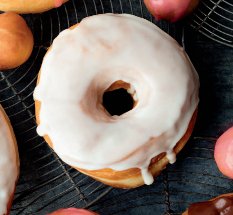

Classic Glazed
Here is a trio of easy-to-make glazes for dressing up your doughnuts.
Once the glaze is applied, be sure to gild with any garnishes—sprinkles,
toasted nuts, shredded coconut, chocolate chips—before it sets.

Ingredients
- 2 cups confectioners’ sugar
- 1⁄2 teaspoon salt
- 1⁄2 cup whole milk
- 2 teaspoons vanilla extract
Steps
- In a bowl, stir together the confectioners’ sugar, salt,
milk, and vanilla until smooth and well blended. (Reduce
the amount of milk for a thicker glaze.)
- Stir gently before
glazing the doughnuts.
- Use the glaze within an hour or
cover and refrigerate for up to 3 days.